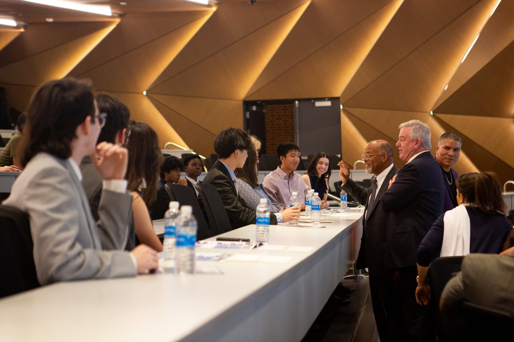
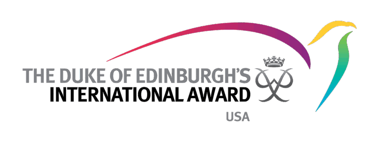

CNPAF Youth Cabinet
青年內閣
全球青年領袖戰略賦能與精英養成計劃。從考察"你學到了什麼"，轉向考察"你能創造什麼"。我們提供一個模擬現代社會執行規則的高維實驗場。
內閣實戰足跡
加入青年內閣，意味著你將走出象牙塔，參與真實的社會議題。點選目錄，探索我們的青年議員在各地發起的改變。


國際至高榮譽體系護航
作為官方認證合作機構，我們將指導成員衝擊在國際招生官眼中極具分量的兩大青年榮譽。這不僅是獎項，更是全球精英青年的"通行證"。

愛丁堡公爵國際獎
被譽為"全球青年界的諾貝爾獎"。該獎項在英聯邦及歐美頂尖高校申請中極具含金量，代表著申請者具備卓越的綜合素質、抗逆力與社會責任感。
美國國會獎認證
美國國會授予青年的最高榮譽，也是美國唯一的聯邦級青年獎項。獲得該獎章不僅是國家級的認可，更是通往美國頂尖名校的有力敲門磚。
模擬議會與"雙院制"治理
拒絕"過家家"式的模擬。我們效仿現代民主議會制度，構建嚴謹的雙院制結構，為精英青年提供一個安全試錯、真實履職的實戰平臺。
上議院 (The Upper House)
戰略決策層
由各區域 Branch Leader 組成。負責制定組織發展的年度戰略方向、稽核重大跨區域專案、決定預算分配及外交事務。
培養：宏觀戰略思維 / 資源整合 / 談判技巧下議院 (The Lower House)
執行運營層
由各 Branch 的核心運營官組成。負責具體議案的提案、專案落地執行、會員管理及社群反饋。
培養：專案管理 / 團隊協作 / 危機處理發起人行動指南 (The 5 Phases)
願景構建
Visioning
團隊組建
Recruitment
路演共識
Pitching
制度確立
Establishment
啟動執行
Launch
邁出第一步，隨時與我們聯絡
無論你是想發起一個新的分支，還是隻是好奇青年內閣在做什麼，都歡迎在下方留言。